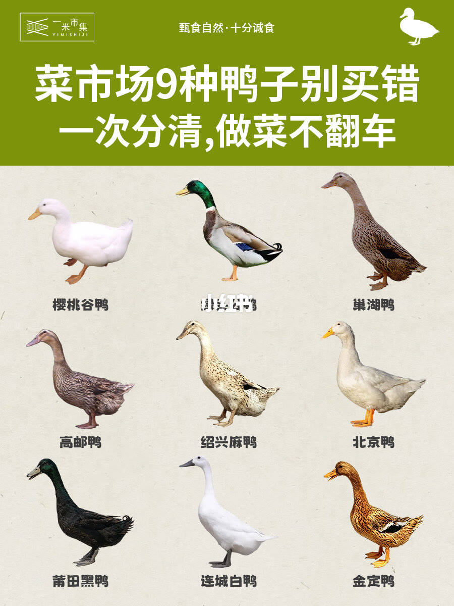
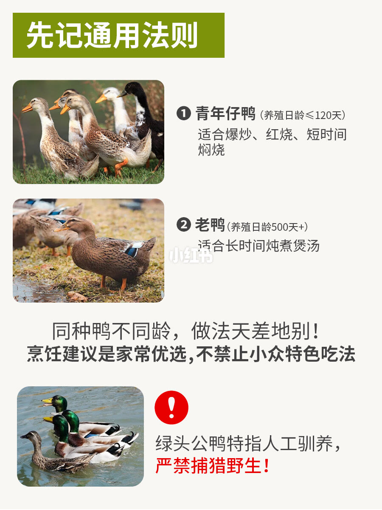
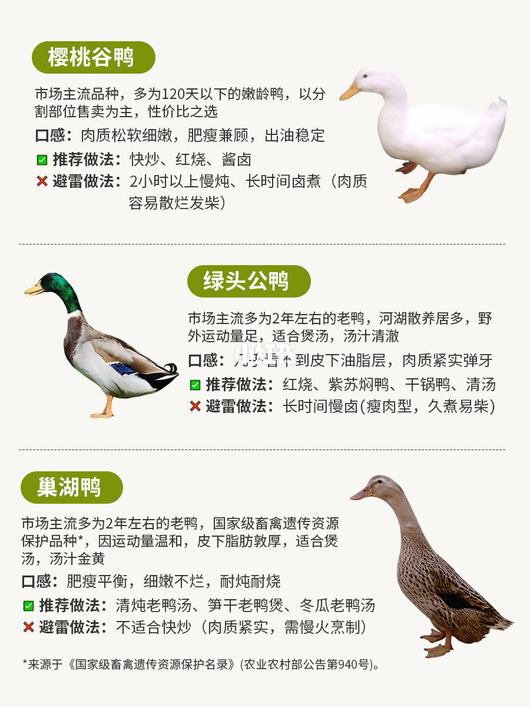
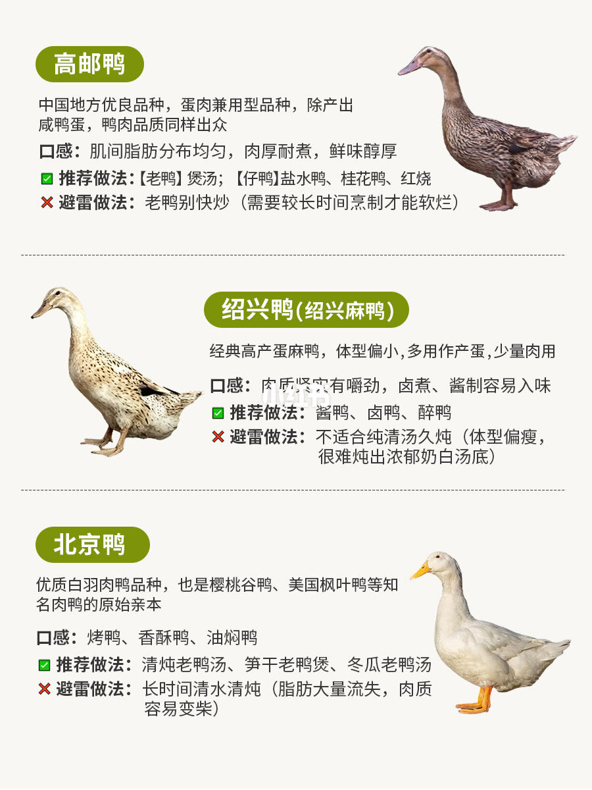
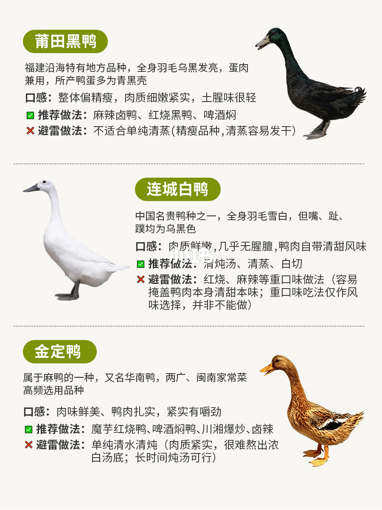
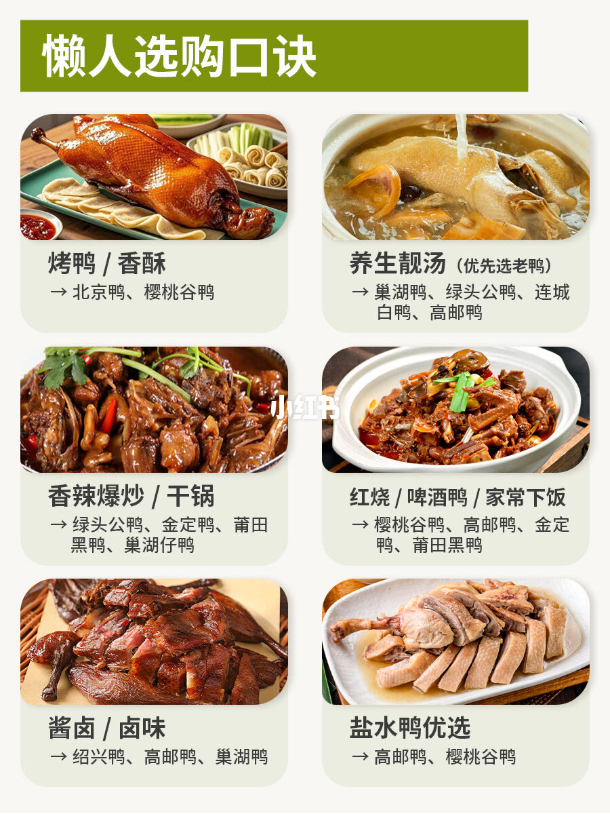
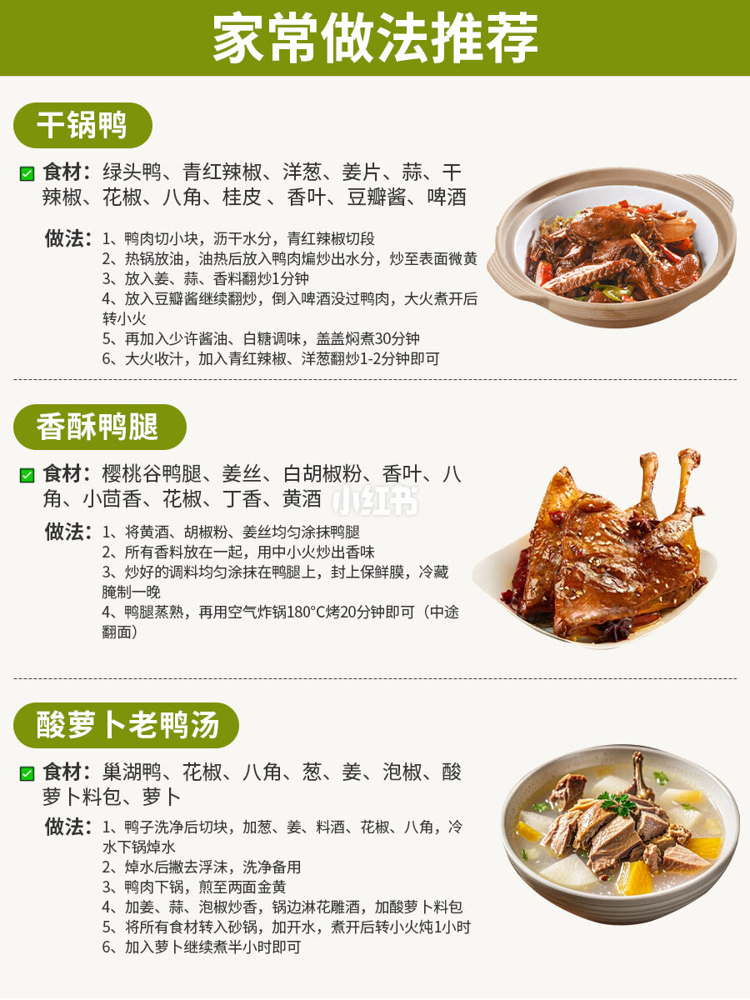

1/7
九种鸭先认脸
封面是 3×3 的品种图，标题写「菜市场 9 种鸭子别买错」。能认出来的名字是樱桃谷鸭、巢湖鸭、高邮鸭、绍兴麻鸭、北京鸭、莆田黑鸭、连城白鸭、金定鸭。第二格是绿头、颈环、褐灰身的公鸭，画面上压了水印，名字以后面几页的「绿头公鸭」为准。

2/7
先记日龄，再记品种
这一页标题是「先记通用法则」。青年仔鸭定义为饲养不超过 120 天，适合爆炒、红烧和短时间焖烧。老鸭定义为 500 天以上，适合长时间炖煮煲汤。中间一句说明：同品种不同日龄，做法差很多，这里写的是家常偏好。
页底用红字提醒：文中绿头公鸭只指人工养殖的，严禁捕猎野生。

3/7
樱桃谷、绿头、巢湖
樱桃谷鸭被写成市场主流，多是 120 天内的青年鸭，常分割卖。肉松软、肥瘦匀、出油稳。推荐快炒、红烧、酱卤。避雷是炖超过 2 小时或长时间卤，肉容易烂或发柴。
绿头公鸭写成约 2 年的老鸭，江河放养、活动多，几乎没有皮下脂肪，肉紧有弹性，汤清。推荐红烧、紫苏焖鸭、干锅鸭、清汤。避雷是长时间慢卤，瘦肉型会柴。
巢湖鸭同样写成约 2 年的老鸭，并注明是国家级畜禽遗传资源。皮下脂肪厚，肥瘦匀，耐炖。推荐清炖老鸭汤、笋干老鸭煲、冬瓜老鸭汤。不适合快炒。页脚写资料来自《国家畜禽遗传资源品种名录》（农业农村部公告第 940 号）。这是笔记的出处声明，本页没有核对公告原文。

4/7
高邮、绍兴、北京
高邮鸭写成兼用型地方品种，咸蛋之外肉质也好。肌间脂肪匀，肉厚耐煮。老鸭炖汤，仔鸭做盐水鸭、桂花鸭或红烧。老鸭不要爆炒。
绍兴鸭/绍兴麻鸭写成高产蛋鸭，体型小，肉用只是一部分。肉紧、卤制入味。推荐酱鸭、卤鸭、醉鸭。不适合长时间清汤，瘦，不容易吊出奶白汤底。
北京鸭写成优质白羽肉鸭，也是樱桃谷鸭等肉鸭的亲本之一。这一页把它对准烤鸭、香酥鸭、油焖鸭，并提醒长时间白水炖会把脂肪炖掉，肉容易柴。

5/7
莆田黑鸭、连城白鸭、金定鸭
莆田黑鸭写成福建沿海地方品种，肉蛋兼用，蛋壳常偏青黑。肉偏瘦、细紧、土腥少。推荐麻辣卤、红烧、啤酒焖。单独清蒸容易柴。
连城白鸭：白羽、黑喙黑蹼。肉鲜、腥味轻，带一点本味甜。推荐清炖、清蒸、白切。重口红烧和重辣会盖住甜味，除非就是要重口。
金定鸭写成华南麻鸭，粤桂闽南家常常见。肉紧、有嚼劲。推荐魔芋红烧、啤酒焖、川湘爆炒、卤辣。白水短炖不容易出奶白汤，要出汤得炖很久。

6/7
按菜选鸭的口诀
这一页把前面的品种收成六道菜。烤鸭/香酥：北京鸭、樱桃谷鸭。养生汤、优先老鸭：巢湖鸭、绿头公鸭、连城白鸭、高邮鸭。香辣爆炒/干锅：绿头公鸭、金定鸭、莆田黑鸭、巢湖仔鸭。红烧/啤酒鸭：樱桃谷鸭、高邮鸭、金定鸭、莆田黑鸭。酱卤：绍兴鸭、高邮鸭、巢湖鸭。盐水鸭：高邮鸭、樱桃谷鸭。

7/7
三道家常做法
干锅鸭用绿头鸭。鸭块煸到出水收干、皮微黄，再下姜蒜香料和豆瓣，啤酒没过鸭块，小火约 30 分钟，收汁后下青红椒和洋葱炒 1–2 分钟。
香酥鸭腿用樱桃谷鸭腿。黄酒、白胡椒、姜丝抹匀，香料小火炒香后抹上，冷藏腌一夜，蒸熟，空气炸锅 180℃ 约 20 分钟，中途翻面。
酸萝卜老鸭汤用巢湖鸭。冷水加葱姜料酒花椒八角焯过，再煎到两面微黄，下姜蒜泡椒和酸萝卜料包，沸水小火 1 小时，最后下萝卜再 30 分钟。

汇总
先问日龄，再对菜
七页合在一起的用法是：120 天内的仔鸭走爆炒、红烧、短焖；500 天以上的老鸭走长炖。樱桃谷和北京鸭偏烤、酥、快火；巢湖、绿头、连城白、高邮老鸭偏汤；绍兴偏酱卤。依据在第 2 页的日龄线，以及第 3 到 6 页的推荐和避雷。这是一米市集的家常偏好，不是检疫标准。绿头公鸭那一页写明只指养殖个体。品种名录的公告号出现在第 3 页，此处没有核对原文。